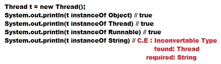
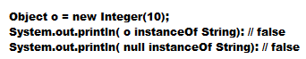

InstanceOf Operator
- Using InstanceOf operator we can check the given object is of a particular type or not .
- InstanceOf operator return boolean value .
- To use instanceOf operator there must be a relationship between two argument type, or else
we will get Compile time error: Inconvertable type

- When we will check from parent object to child object we will get result as "false" always.
- When we will check "null" instanceOf Some classes we will get "false" always

Difference between instanceOf and isInstance():
- We can use instanceOf operator to check whether the given object is of particular type or not and the type is specified at the beginning .
Example: Thread t = new Thread();
System.out.println(t instanceOf Runnable); O/P: true
- We can use isInstance() method to check whether the given object is of particular type or not and we don't know the type at the beginning
and is specified dynamically at runtime
Example: Thread t = new Thread()
System.out.println(Class.forName(args[0].isInstance(t)));